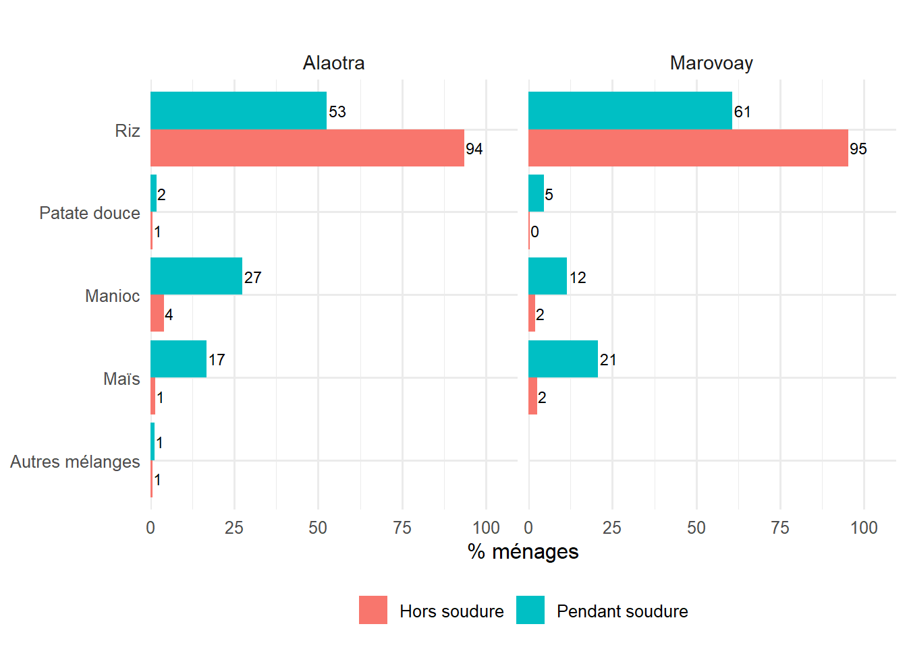
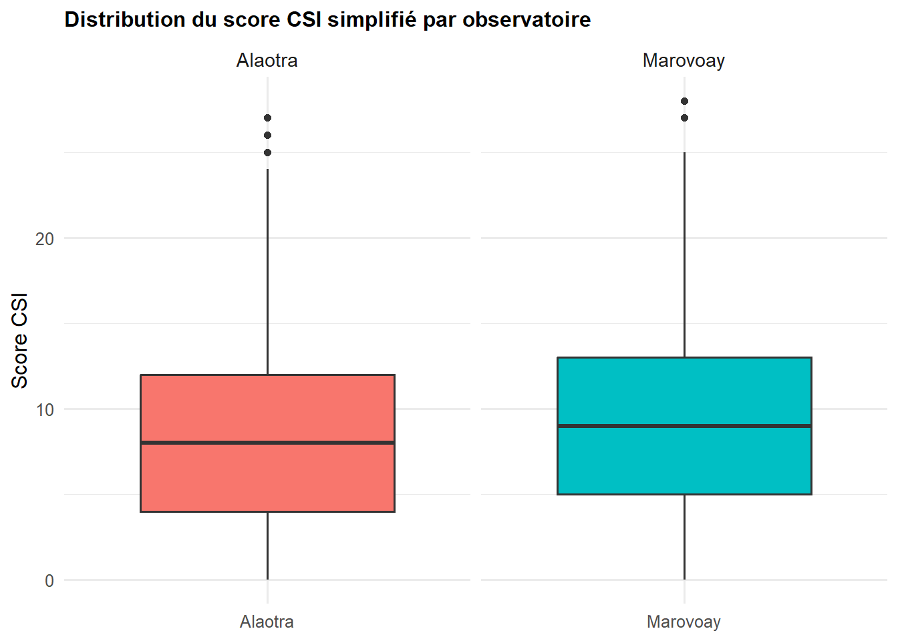

L’analyse de la sécurité alimentaire permet de caractériser la vulnérabilité des ménages en examinant la période de soudure, les modes de consommation de base ainsi que les diverses stratégies d’adaptation mobilisées pour faire face au stress alimentaire.
WarningTravail de vérification en cours
Les résultats présentés ci-dessous sont provisoires et pourront être ajustés ou enrichis par les informations supplémentaires recueillies lors des restitutions locales.
La sécurité alimentaire des ménages ruraux est étroitement liée au calendrier agricole et à la gestion des stocks.
Dans l’Alaotra, 100 % des ménages déclarent au moins un mois de soudure.
A Marovoay, 97.3 % des ménages déclarent au moins un mois de soudure.
6.1.1 Période de soudure
La période de soudure désigne les mois durant lesquels les stocks alimentaires du ménage sont insuffisants pour couvrir ses besoins.
Dans l’Alaotra, La soudure dure en moyenne 3.8 mois (médiane : 3).
A Marovoay, La soudure dure en moyenne 2.2 mois (médiane : 2).
6.1.1.1 Durée de la soudure par observatoire
A Alaotra, la durée moyenne de la période de soudure est de 3.8 mois. La moitié des ménages connaissent une période de soudure de 3 mois ou moins . Chaque ménage interrogé subit au moins 1 mois de précarité alimentaire tandis que la durée maximale atteint 12 mois pour certains foyers.
A Marovoay, l’enquête réalisée auprès de 519 ménages révèle une durée moyenne de soudure de 2.2 mois. La moitié des ménages connaissent une période de soudure de 2 mois ou moins . Bien que le maximum observé soit de 11 mois, certains ménages ne déclarent aucun mois de soudure .
Code
# T1 : Statistiques descriptives du nombre de mois de soudure par observatoiresoudure_stats <- res_sa %>%left_join(res_deb, by ="j5") %>%group_by(Observatory) %>%summarise(`Nombre de ménages`=n(),Minimum =min(sal2d, na.rm =TRUE), Médiane =median(sal2d, na.rm =TRUE),Moyenne =round(mean(sal2d, na.rm =TRUE), 1),Maximum =max(sal2d, na.rm =TRUE),`Écart-type`=round(sd(sal2d, na.rm =TRUE), 1),.groups ="drop" )soudure_stats %>%gt() %>%tab_header(title ="Durée de la période de soudure par observatoire",subtitle ="Nombre de mois de soudure (sal2d)" ) %>%tab_style(style =cell_text(weight ="bold"),locations =cells_column_labels() )
6.1.1.2 Durée de la soudure par hameau et observatoire
La soudure est structurellement plus sévère dans le bassin de l’Alaotra.
A Alaotra, les localités qui se situent au-dessus de la moyenne (3.8 mois) sont Ambohidrony avec 4.8 mois, Ambatomanga avec 4.4 mois, Ambodivoara avec 4.3 mois et Ambatoharanana avec 4.1 mois. À l’inverse, les hameaux présentant une durée de soudure inférieure à la moyenne sont Mangabe avec 3.7 mois, Analamiranga avec 3.6 mois et Feramanga Atsimo avec 3.4 mois, tandis qu’Avaradrano est le plus résiliant en enregistrant la période la plus courte avec 3.1 mois.
A Marovoay, la durée moyenne de la soudure est plus restreinte et s’établit à 2.2 mois par an. Le hameau de Madiromiongana est le seul de la zone à se situer au-dessus de cette moyenne avec une durée de 2.8 mois. Les autres hameaux affichent des statistiques inférieures ou égales à la moyenne de l’observatoire, avec 2.2 mois pour Maroala et une durée commune de 1.9 mois pour Ampijoroa et Bepako.
À Alaotra, la distribution est étalée : 25 % des ménages ont 2 mois de soudure, mais plus de 20 % subissent entre 5 et 7 mois de manque.
À Marovoay, la concentration est forte sur les durées courtes : 37 % n’ont qu’un seul mois de soudure.
Code
# G1 : Histogramme de la distribution du nombre de mois de soudureres_sa %>%left_join(res_deb, by ="j5") %>%expand_sites_for_profile() %>%filter(!is.na(sal2d)) %>%mutate(sal2d =factor(sal2d)) %>%count(Observatory, sal2d) %>%mutate(pct =round(n /sum(n) *100, 1), .by = Observatory) %>%ror_bar_v(x = sal2d, y_label ="% ménages", x_angle =45)
Les deux zones connaissent une période de soudure centrée sur le premier trimestre de l’année civile, correspondant à la période précédant la grande récolte.
À l’Alaotra, la période de soudure est particulièrement intense et prolongée. La période la plus critique se situe entre février et avril pour atteindre un pic de 86.8% en mars. Par contre, bien avant le début de la période des pluies au mois d’octobre, la période de soudure touche déjà 12.8% des ménages au mois d’août et continue à augmenter les mois suivants. Les retombés du mois d’avril jusqu’au mois de juillet coincident avec la période de récolte du riz pluvial et irrigué entre avril et juin (Calendrier agricole, MINAGRI 2001)
À Marovoay, la période la plus critique survient entre janvier et mars avec un pic de 65.3% des ménages en février. Ce pic de février est rapidement résorbé le mois suivant avec 52.4% des ménages touchés puis chute à 20.6% en avril. En effet, dès la mi-mars, débutent les récoltes du riz pluvial et de la campagne Asara (Riz irrigué de 2ème saison). De plus, la présence d’autres campagnes notamment le riz intermédiaire Atriatry récolté à partir de mai, ainsi que le riz de contre-saison Jeby en juin et juillet, permet de maintenir la sécurité alimentaire durant une grande partie de la saison sèche (Calendrier agricole, MINAGRI 2001). Cependant, la soudure débute en septembre juste avant le début de la période humide avec 24.9% des ménages concernés . Toutefois, la situation reste relativement stable autour de 22% à 25% jusqu’en décembre avant de bondir à 39.3% en janvier.
Le stress alimentaire reflète les mois durant lesquels le ménage éprouve des difficultés à se nourrir correctement, que ce soit en quantité ou en qualité. Sa durée est généralement supérieure à celle de la soudure stricto sensu.
Dans l’Alaotra, La durée moyenne du stress alimentaire atteint 2.5 mois.
A Marovoay, La durée moyenne du stress alimentaire atteint 3.3 mois.
6.1.2.1 Durée du stress alimentaire par observatoire
Bien que le maximum observé soit également de 12 mois, certains ménages ne déclarent aucun mois de stress alimentaire.
A Alaotra, la durée moyenne du stress alimentaire est de 2.5 mois. La période de soudure de la moitié des ménages est inférieure ou égale à 2 mois et l’autre moitié a une période de soudure supérieure à 2 mois.
A Marovoay, l’enquête auprès des ménages révèle une durée moyenne de stress alimentaire de 3.3 mois. La période de soudure de la moitié des ménages est de 3 mois ou moins.
Code
# T4 : Statistiques du stress alimentaire par observatoirestress_stats <- res_sa %>%left_join(res_deb, by ="j5") %>%group_by(Observatory) %>%summarise(`Nombre de ménages`=n(),Minimum =min(sal15a, na.rm =TRUE), Médiane =median(sal15a, na.rm =TRUE),Moyenne =round(mean(sal15a, na.rm =TRUE), 1),Maximum =max(sal15a, na.rm =TRUE),`Écart-type`=round(sd(sal15a, na.rm =TRUE), 1),.groups ="drop" )stress_stats %>%gt() %>%tab_header(title ="Durée du stress alimentaire par observatoire",subtitle ="Nombre de mois de stress alimentaire (sal15a)" ) %>%tab_style(style =cell_text(weight ="bold"),locations =cells_column_labels() )
A VOIR CODE R CAR LE CALENDRIER N’APPARRAIT PAS +> FIGURE +INTERPRETATION
6.1.2.3 Comparaison soudure et stress alimentaire
À l’Alaotra, la période de soudure est particulièrement intense et prolongée. Les taux de ménages concernés est systématiquement supérieurs à ceux déclarant un stress alimentaire durant la majeure partie de l’année. La période la plus critique se situe entre février et avril atteignant un pic de 86.8 % de ménages en soudure contre 74.8 % en stress alimentaire au mois de mars. Bien avant le début de la saison humide, la période de soudure s’intensifie dès le mois d’août en touchant 12.8 % des ménages pour atteindre 37.5 % en octobre, tandis que le stress alimentaire se manifeste dès le mois de septembre avec un taux de 17 %. La baisse brutale observée à partir de mai, où le taux de ménages en soudure chute à 3.2 % et celui du stress alimentaire à 2.6 %, coïncide exactement avec le début des récoltes du riz irrigué et du riz pluvial qui s’étendent de mai à juin selon le calendrier agricole de cette zone.
À Marovoay, les taux de stress alimentaire sont systématiquement plus élevés que ceux de la soudure tout au long de l’année. La période la plus critique survient entre janvier et mars avec un pic en février touchant 65.3 % des ménages pour la soudure et 67.6 % pour le stress alimentaire. Ce pic de février est rapidement résorbé le mois suivant avec 52.4 % de ménages en soudure en mars, puis chute drastiquement à 20.6 % en avril. Ce soulagement précoce s’explique par le début des récoltes du riz pluvial et de la campagne Asara dès la mi-mars selon le calendrier agricole. La présence d’autres cycles rizicoles comme le riz intermédiaire (Atriatry) récolté à partir de mai, et le riz de contre-saison (Jeby) en juin et juillet permet de maintenir la sécurité alimentaire durant la saison sèche bien que le stress alimentaire persiste pour environ 10 % à 17 % des ménages durant cette période. La période de soudure amorce cependant sa progression dès le mois de septembre avec 11.9 % de ménages affectés juste avant la saison humide, pour s’établir à 24.9 % en octobre. À cette même période, le stress alimentaire concerne déjà 35.1 % des foyers, bien que cette difficulté se manifeste dès le mois d’août avec un taux de 13.3 %. Enfin, entre octobre et décembre, les niveaux de soudure et de stress alimentaire demeurent relativement stables, oscillant respectivement entre 22 % et 25 % d’une part, et entre 30 % et 35 % d’autre part, avant de bondir en janvier pour atteindre 39.3 % contre 47.4 %.
Figure 6.1: Comparaison soudure et stress alimentaire
6.1.3 Alimentation de base
Cette section compare les aliments de base consommés aux trois repas, hors et pendant la période de soudure. Le riz constitue la base alimentaire, mais sa place relative varie selon la saison et la localité. Les substitutions opérées pendant la soudure (manioc, patate douce, maïs) témoignent des stratégies d’adaptation alimentaire des ménages.
Code
# Définir les labels des alimentsalim_labels <-c("1"="Riz", "2"="Maïs", "3"="Patate douce","4"="Manioc", "5"="Pain/beignet/galettes", "6"="Pomme de terre","7"="Taro", "8"="Blé/farine de blé", "9"="Millet/sorgho","11"="Autre céréale", "12"="Igname","14"="Autre racine/tubercule", "15"="Pâte alimentaire","23"="Banane", "24"="Fruit à pain","25"="Boisson chaude", "26"="Lait", "27"="Fruit sauvage","28"="Rien", "29"="Brèdes", "30"="Légumineuse seule","31"="Légumineuse+Céréale", "32"="Céréale+Légumes","33"="Mélange tubercules", "34"="Tubercule+Céréale","35"="Tubercule+Légumes", "36"="Autres mélanges")
6.1.3.1 Alimentation hors soudure
A Alaotra, le riz constitue le socle de l’alimentation des ménages pour les trois repas de la journée hors période de soudure avec 97.8% des ménages consomment du riz au petit-déjeuner, 93.5% au déjeuner et 99.6% au dîner.
À Marovoay, le riz est l’aliment de base prédominant en dehors de la période de soudure. Il représente l’essentiel du petit-déjeuner à 89.9% des ménages, des déjeuners à 95.2%, des dîners pour 99.6%.
Code
# T6 : Aliment principal aux 3 repas hors soudure, par observatoirealim_hors <- res_sa %>%left_join(res_deb, by ="j5") %>%select(Observatory, sal1a, sal1b, sal1c) %>%pivot_longer(cols =c(sal1a, sal1b, sal1c),names_to ="repas_var",values_to ="aliment_code" ) %>%mutate(Repas =case_when( repas_var =="sal1a"~"Petit-déjeuner", repas_var =="sal1b"~"Déjeuner", repas_var =="sal1c"~"Dîner" ),Aliment = alim_labels[as.character(aliment_code)] ) %>%filter(!is.na(Aliment)) %>%count(Observatory, Repas, Aliment) %>%group_by(Observatory, Repas) %>%mutate(pct =round(n /sum(n) *100, 1)) %>%ungroup() %>%filter(pct >=2) %>%arrange(Observatory, Repas, desc(pct))alim_hors %>%select(Observatory, Repas, Aliment, pct) %>%obs_gt() %>%tab_header(title ="Alimentation de base hors soudure par observatoire",subtitle ="Aliments représentant au moins 2% des réponses" ) %>%cols_label(Repas ="Repas", Aliment ="Aliment", pct ="%") %>%fmt_number(columns = pct, decimals =1) %>%tab_style(style =cell_text(weight ="bold"),locations =cells_column_labels() ) %>%tab_options(row_group.font.weight ="bold")
Alimentation de base hors soudure par observatoire
Aliments représentant au moins 2% des réponses
Repas
Aliment
%
Alaotra
Déjeuner
Riz
93.5
Déjeuner
Manioc
4.0
Dîner
Riz
99.6
Petit-déjeuner
Riz
97.8
Marovoay
Déjeuner
Riz
95.2
Déjeuner
Maïs
2.5
Dîner
Riz
99.6
Petit-déjeuner
Riz
89.9
Petit-déjeuner
Rien
2.7
Petit-déjeuner
Boisson chaude
2.3
6.1.3.2 Alimentation pendant la soudure
A Alaotra, le riz demeure l’aliment prédominant pour 92.0% des ménages au petit déjeuner. Pour le déjeuner, les habitudes se diversifient davantage car le riz ne représente plus que 52.6% des réponses tandis que le manioc et le maïs deviennent des substituts importants avec des taux respectifs de 27.4% et 16.7%. Enfin, le dîner reste la structure la plus stable de l’alimentation avec 98.0% des ménages qui continuent de consommer du riz pendant cette période de soudure.
A Marovoay, le changement est très marqué durant la soudure au petit déjeuner. La part du riz chute à 55.7% tandis que 25.3% des ménages déclarent ne rien consommer du tout. Concernant le déjeuner, le riz ne constitue plus le repas que pour 60.8% des ménages complété par le maïs à 20.7%, le manioc à 11.5% et la patate douce à 4.6%. Pour le dîner, le riz conserve sa place centrale pour 92.5% des ménages, bien que le manioc (2.6%) et le maïs (2.4%) fassent de légères apparitions dans les statistiques de consommation.
Code
# T7 : Aliment principal aux 3 repas pendant la soudurealim_pendant <- res_sa %>%left_join(res_deb, by ="j5") %>%select(Observatory, sal2a, sal2b, sal2c) %>%pivot_longer(cols =c(sal2a, sal2b, sal2c),names_to ="repas_var",values_to ="aliment_code" ) %>%mutate(Repas =case_when( repas_var =="sal2a"~"Petit-déjeuner", repas_var =="sal2b"~"Déjeuner", repas_var =="sal2c"~"Dîner" ),Aliment = alim_labels[as.character(aliment_code)] ) %>%filter(!is.na(Aliment)) %>%count(Observatory, Repas, Aliment) %>%group_by(Observatory, Repas) %>%mutate(pct =round(n /sum(n) *100, 1)) %>%ungroup() %>%filter(pct >=2) %>%arrange(Observatory, Repas, desc(pct))alim_pendant %>%select(Observatory, Repas, Aliment, pct) %>%obs_gt() %>%tab_header(title ="Alimentation de base pendant la soudure par observatoire",subtitle ="Aliments représentant au moins 2% des réponses" ) %>%cols_label(Repas ="Repas", Aliment ="Aliment", pct ="%") %>%fmt_number(columns = pct, decimals =1) %>%tab_style(style =cell_text(weight ="bold"),locations =cells_column_labels() ) %>%tab_options(row_group.font.weight ="bold")
Alimentation de base pendant la soudure par observatoire
Aliments représentant au moins 2% des réponses
Repas
Aliment
%
Alaotra
Déjeuner
Riz
52.6
Déjeuner
Manioc
27.4
Déjeuner
Maïs
16.7
Dîner
Riz
98.0
Petit-déjeuner
Riz
92.0
Petit-déjeuner
Rien
3.6
Marovoay
Déjeuner
Riz
60.8
Déjeuner
Maïs
20.7
Déjeuner
Manioc
11.5
Déjeuner
Patate douce
4.6
Dîner
Riz
92.5
Dîner
Manioc
2.6
Dîner
Maïs
2.4
Petit-déjeuner
Riz
55.7
Petit-déjeuner
Rien
25.3
Petit-déjeuner
Manioc
6.1
Petit-déjeuner
Boisson chaude
3.6
Petit-déjeuner
Maïs
3.4
Petit-déjeuner
Patate douce
2.8
6.1.3.3 Comparaison de l’alimentation au déjeuner : hors vs pendant soudure
A Alaotra, le riz est l’aliment de base quasi exclusif consommé par 93.5% des ménages hors soudure et va chuter à 52.6% pendant la soudure. Ce recul est compensé par une diversification vers d’autres produits vivriers. Le manioc devient l’aliment de base au déjeuner pour 27.4% des ménages tandis que le maïs concerne 16.7% des ménages.
À Marovoay, le riz domine le déjeuner hors soudure avec un taux de 95.2%. Pendant la soudure, sa consommation diminue pour atteindre 60.8%. Le maïs devient alors le principal aliment de substitution avec 20.7% des réponses. Les ménages intègrent également d’autres aliments comme le manioc à hauteur de 11.5% et la patate douce pour 4.6% d’entre eux.
Code
# G4 : Comparaison hors soudure vs pendant soudure au déjeuner (top 5 aliments)comp_dejeuner <- res_sa %>%left_join(res_deb, by ="j5") %>%expand_sites_for_profile() %>%select(Observatory, sal1b, sal2b) %>%pivot_longer(cols =c(sal1b, sal2b),names_to ="periode",values_to ="aliment_code" ) %>%mutate( Période =if_else(periode =="sal1b", "Hors soudure", "Pendant soudure"),Aliment = alim_labels[as.character(aliment_code)] ) %>%filter(!is.na(Aliment)) %>%count(Observatory, Période, Aliment) %>%group_by(Observatory, Période) %>%mutate(pct =round(n /sum(n) *100, 1)) %>%ungroup()# Garder le top 5 des aliments les plus fréquentstop_aliments <- comp_dejeuner %>%group_by(Aliment) %>%summarise(total =sum(n), .groups ="drop") %>%slice_max(total, n =5) %>%pull(Aliment)comp_dejeuner %>%filter(Aliment %in% top_aliments) %>%ror_bar_grouped(x = Aliment, fill = Période,y_label ="% ménages", direction ="horizontal")

6.1.3.4 Changement d’aliment de base au déjeuner entre hors et pendant soudure
À l’Alaotra, un peu plus de la moitié des ménages, soit 52.2%, consomme du riz au déjeuner durant la période de soudure. Pour le reste des ménages, l’épuisement des stocks entraîne un recours accru à des aliments de substitution comme le manioc et le maïs, consommés respectivement par 23.4 % et 15.3 % des ménages. Ce recours au manioc est d’autant plus marqué qu’il ne constitue l’alimentation de base habituelle que pour 3.6 % des foyers au cours de l’année.
À Marovoay, une proportion plus élevée de ménages, soit 60.6 %, mange du riz au déjeuner pendant la période de soudure. Pour compenser cette diminution, les ménages se tournent vers des aliments de substitution comme le maïs, le manioc et la patate douce adoptés respectivement par 18.1 %, 9.7 % et 1.2 % d’entre eux. Cette transition vers le maïs et le manioc est d’autant plus marquée que ces aliments ne constituent l’alimentation de base habituelle au déjeuner que pour 2.2 % et 1.6 % des ménages au cours de l’année. En revanche, hors période de soudure, les ménages ne consomment pas de patate douce.
Face à l’insécurité alimentaire, les ménages déploient un éventail de stratégies d’adaptation dont la sévérité varie : réduction des portions, substitution d’aliments, endettement, cueillette sauvage, voire décapitalisation. Chaque stratégie est évaluée sur une échelle de fréquence : 0 = Jamais, 1 = Rarement, 2 = Quelquefois, 3 = Souvent.
6.2.1 Fréquence des stratégies d’adaptation
A Alaotra, la stratégie d’adaptation la plus fréquemment mobilisée par les ménages, en cumulant les fréquences quelquefois et souvent, est la réduction de la ration à chaque repas avec un taux de 58.2%. Elle est suivie par la réduction ou le renoncement aux ingrédients chers qui concerne 51.7% des foyers et le remplacement de l’aliment de base pour 41.1%. Plus d’un quart des ménages (26.0%) déclarent réduire le nombre de repas quotidien. Viennent ensuite la cueillette d’aliments sauvages (21.5 %), l’emprunt d’aliments (21.4 %) et l’endettement pour l’achat de nourriture (13.8 %).
À Marovoay, la réduction de la ration à chaque repas étant pratiquée souvent ou quelquefois par 80.5% des ménages. La réduction ou le renoncement aux ingrédients chers arrive en deuxième position avec 60.2% des réponses. Le remplacement de l’aliment de base et la réduction du nombre de repas quotidien sont utilisés à parts égales par 43.8% des foyers. On observe ensuite le recours à l’endettement alimentaire (17.7%), la réduction des dépenses non essentielles (16.2%), la cueillette d’aliments sauvages (15.1%) et l’emprunt de nourriture (14.7%). L’envoi d’un membre du ménage chez un autre ménage concerne 10.8% des familles.
6.2.2 Sources d’endettement et d’emprunt alimentaire
A Alaotra, concernant les sources d’endettement pour l’achat alimentaire, les ménages de l’Alaotra se tournent principalement vers la famille à hauteur de 64.1%, suivie des voisins pour 40.6%. Pour ce qui est de l’emprunt d’aliments de base, la famille reste la source la plus sollicitée avec 45.5% suivie des voisins avec 35.0% et enfin des commerçants avec 28.0%.
À Marovoay, l’endettement pour l’achat de nourriture est contracté en priorité auprès de la famille pour 44.0% des ménages concernés, puis auprès des voisins pour 33.0%, des usuriers pour 17.8%. Quant à l’emprunt d’aliments, il s’effectue majoritairement auprès de la famille à raison de 58.6% tandis que les voisins interviennent pour 27.1%.
A Alaotra, les principales sources d’emprunt d’aliments de base proviennent de la famille, citée par 45.5 % des ménages. Les voisins occupent également une place importante avec 35 %, tandis que les commerçants représentent 28 %. Les autres sources restent très peu mobilisées, avec seulement 1.7 % pour les usuriers et 1.7 % pour les autres formes d’emprunt.
A Marovoay, la famille constitue de loin la principale source d’emprunt d’aliments de base avec 58.6 % des ménages concernés. Les voisins arrivent ensuite avec 27.1 %. Les commerçants occupent une place plus limitée avec 6.9 %, tandis que les usuriers et les autres sources demeurent marginales avec respectivement 5.6 % et 1.4 %.
# G6 : Top 5 des stratégies les plus fréquentestop5 <- strat_resume %>%slice_head(n =5) %>%pivot_longer(cols =where(is.numeric), names_to ="Observatory", values_to ="pct")
6.3 Indice synthétique de stratégies d’adaptation (CSI simplifié)
Un score simplifié est calculé en sommant les fréquences de toutes les stratégies (0 à 3) pour chaque ménage. Plus le score est élevé, plus le ménage recourt intensément à des stratégies d’adaptation. La présence de quelques valeurs extrêmes supérieures à 25 révèle des situations de forte vulnérabilité alimentaire chez certains ménages.
À Alaotra, le score CSI moyen est de 8.4 traduisant un recours relativement important aux stratégies d’adaptation alimentaires. Feramanga Atsimo présente le score le plus élevé (10.1), suivi d’Ambohidrony (9.0). Ambatomanga (8.6), Analamiranga et Mangabe (8.5) affichent des niveaux proches de la moyenne générale, tandis qu’Avaradrano enregistre le score le plus faible (6.8). La boîte à moustaches montre que la majorité des ménages ont des scores concentrés autour de la médiane située près de 8.
À Marovoay, le score CSI moyen est de 9.5 indiquant un recours plus important aux stratégies d’adaptation. Maroala présente le score le plus élevé (10.0), suivi d’Ampijoroa (9.6), de Madiromiongana (9.3) et de Bepako (9.1). La boîte à moustaches montre une médiane autour de 9 et une concentration de la majorité des ménages entre des scores d’environ 5 et 13.
Somme des fréquences des stratégies (0–3 par stratégie)
Hameau
Nb ménages
Score CSI moyen
Alaotra
Ambatoharanana
31
7.2
Ambatomanga
68
8.6
Ambodivoara
58
8.3
Ambohidrony
52
9.0
Analamiranga
46
8.5
Avaradrano
90
6.8
Feramanga Atsimo
89
10.1
Mangabe
73
8.5
Ensemble
507
8.4
Marovoay
Ampijoroa
143
9.6
Bepako
123
9.1
Madiromiongana
137
9.3
Maroala
116
10.0
Ensemble
519
9.5
A Alaotra, la distribution du score CSI simplifié présente une médiane autour de 8, avec une dispersion relativement importante des valeurs. La moitié des ménages se situe approximativement entre 4 et 12, ce qui traduit des situations assez variées en matière de stratégies d’adaptation alimentaire. Quelques ménages affichent toutefois des scores particulièrement élevés, dépassant 20 et atteignant environ 25 à 27, ce qui indique des niveaux de vulnérabilité plus marqués pour une partie réduite de la population.
A Marovoay, la médiane du score CSI simplifié est légèrement plus élevée, autour de 9. Les valeurs sont également dispersées, avec une concentration importante des ménages entre 5 et 13. Certains ménages présentent des scores très élevés pouvant dépasser 25, révélant l’existence de situations de vulnérabilité alimentaire plus sévères au sein de l’observatoire.
Code
# G7 : Distribution du score CSI par observatoirecsi_expanded <- res_ssa %>%left_join(res_deb, by ="j5") %>%expand_sites_for_profile() %>%mutate(csi_score =rowSums(across(all_of(strat_vars), ~replace_na(., 0))))n_obs <-n_distinct(csi_expanded$Observatory)ggplot(csi_expanded, aes(x = Observatory, y = csi_score, fill = Observatory)) +geom_boxplot(show.legend =FALSE) + { if (n_obs >1) facet_wrap(~Observatory, scales ="free_x") } +labs(title ="Distribution du score CSI simplifié par observatoire",x =NULL,y ="Score CSI" ) +theme_ror() +theme(plot.title =element_text(face ="bold", size =12))

6.4 Évolution de la sécurité alimentaire (1995–2025)
La durée de la période de soudure (sal2d, en mois) est disponible pour un nombre significatif de campagnes. On retrace ici son évolution pour les deux observatoires.
À l’Alaotra, la durée moyenne de la soudure a débuté à environ 3 mois en 1999 avant de connaître une progression importante jusqu’à un sommet de près de 6 mois en 2004. Durant la décennie suivante, entre 2005 et 2014, les valeurs sont restées relativement élevées, fluctuant généralement entre 4.5 et 5.5 mois. La campagne 2025 marque une amélioration par rapport à cette période historique avec une durée moyenne qui s’établit à 3.8 mois par ménage.
A Marovoay présentait une situation de départ très difficile en 1995 avec une durée moyenne de soudure dépassant les 8.5 mois. Une réduction drastique a été observée au cours des années suivantes pour atteindre environ 4 mois en 2003. Entre 2004 et 2014, la durée a connu des variations cycliques comprises entre 3.5 et 5 mois environ. En 2025, la durée moyenne de la soudure atteint son niveau le plus bas enregistré depuis le début du suivi avec 2.2 mois par ménage.
Évolution de la durée moyenne de soudure (mois/ménage)
À l’Alaotra, la proportion de ménages ayant connu une période de soudure a marqué l’histoire de l’observatoire par des variations importantes. En 1999, ce taux était de 87.8% avant d’atteindre un sommet historique de 96.8% en 2003. Une tendance à la baisse s’est ensuite manifestée durant la décennie suivante, le pourcentage de ménages touchés tombant à son niveau le plus bas en 2013 avec 51.1%. Toutefois, les données de la campagne 2025 indiquent une dégradation de la situation, puisque 100% des ménages déclarent désormais subir au moins un mois de soudure au cours de l’année.
À Marovoay, la période de soudure était quasi généralisée au début du suivi avec un taux de 99.2% des ménages en 1995. Cette situation de crise s’est maintenue à des niveaux très élevés (supérieurs à 90%) jusqu’en 2003. Une réduction significative a été enregistrée par la suite atteignant un point bas de 51.7% en 2008, avant de remonter et de fluctuer entre 58% et 72% jusqu’en 2014. Pour la campagne 2025, la prévalence de la soudure repart à la hausse et concerne 97.3% des ménages de l’observatoire.
{kind=link}
{kind=link}
{kind=link}
{kind=link}
{kind=link}
{kind=link}
{kind=link}
{kind=link}
{kind=link}
{kind=link}